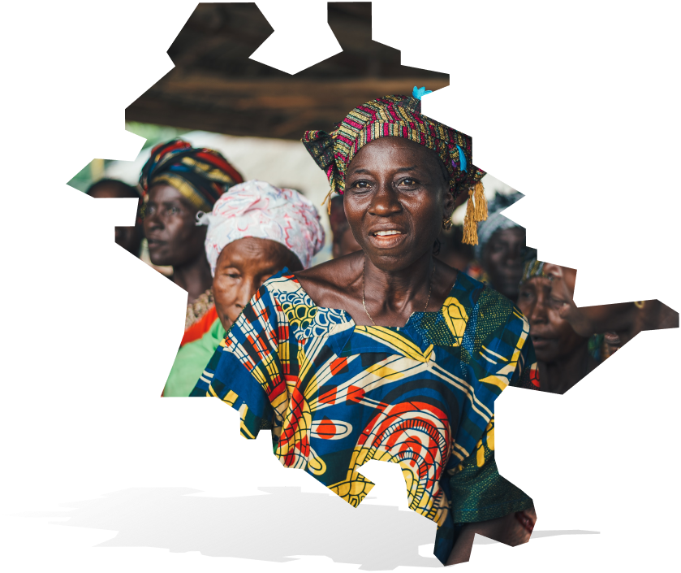

our pride, our heritage,
join our community in lifting out voices

Bakulu people (also Ikolu, Ikulu, Bekulu) are a people found in Zangon Kataf, Kachia and Kauru Local Government Areas of southern Kaduna State of Middle belt(central) Nigeria
Population : 50,000 Location: Southern Kaduna, Nigeria

official title
name
official title
name
official title
name
official title
name
- people
- people
- culture
- art